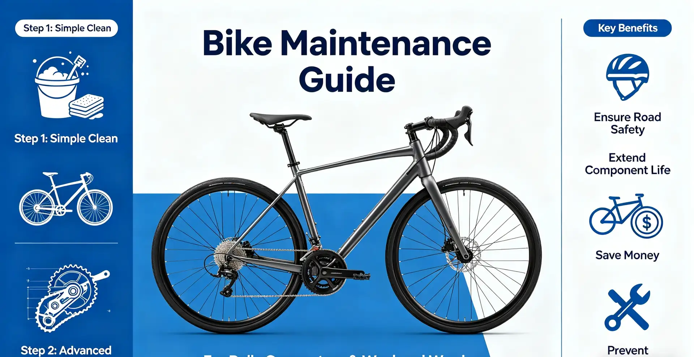

Every pedal stroke produces a click. At first you ignore it, convincing yourself it is just a loose pedal or a dry chain. Then the clicking becomes a grinding—a gritty, metallic sensation transmitted directly through the crank arms. You are feeling a failing bottom bracket (BB). A bottom bracket replacement at a shop costs $45–$ in labor plus $30–$ for the part, totaling $75–$. Doing it yourself takes about 45–60 minutes and requires a $15–$ specialized tool. This guide covers every common BB standard, teaches you to diagnose BB problems before they damage your frame, and provides step-by-step removal and installation instructions.
How I Destroyed a Bottom Bracket in 4 Months
In January 2025, I built up a new gravel bike with a SRAM DUB bottom bracket. I installed it myself but made a critical error: I did not face the bottom bracket shell before installation. The factory paint on the shell edges was uneven, which caused the bearings to sit slightly misaligned. Four months and 1,600 miles later—including several wet, muddy rides through the Pisgah National Forest—the BB started clicking. Within two weeks, the clicking became a grinding noise audible from 50 feet away. When I removed the BB, the non-drive-side bearing had completely seized. The inner race was pitted, and there was rust on the spindle. I replaced the BB ($38 for a new SRAM DUB BSA) and this time had the shell faced at a shop ($25). The lesson: bottom bracket installation precision matters as much as the part quality. A misaligned BB can destroy bearings in as little as 500 miles.
How to Diagnose a Failing Bottom Bracket
Before you start replacing parts, confirm the BB is actually the problem. Chain noise, pedal bearings, and loose crank bolts can all mimic BB symptoms. Here is a systematic diagnosis:
| Symptom | Likely Cause | Confirmation Test |
|---|---|---|
| Clicking once per pedal revolution | Worn BB bearings | Pedal with one leg at a time. If the click occurs only under one leg's power stroke, suspect that side's BB bearing. |
| Grinding/gritty feel when spinning cranks | Contaminated or pitted bearings | Remove the chain and spin the cranks by hand. If they feel rough or have tight spots, the BB bearings are shot. |
| Side-to-side play in crank arms | Worn BB bearings or loose preload | Grab both crank arms and rock them side-to-side. Any movement at the BB indicates worn bearings or improper preload. |
| Creaking under load only | Loose BB cup, dry threads, or frame issue | Remove, clean, grease, and re-torque the BB. If creaking persists, check the frame for cracks. |
| Noise that changes with chainring | Chainring bolts or chain issue | Check chainring bolt torque (8–12 Nm). Inspect chain for wear. Rule out BB before proceeding. |
Understanding Bottom Bracket Standards
The bicycle industry has produced an overwhelming number of BB standards. Identifying yours is the first step. Here are the most common in 2026:
| Standard | Shell Width | Shell Inner Diameter | Common On | Tool Needed | BB Cost Range |
|---|---|---|---|---|---|
| BSA (English threaded) | 68mm or 73mm | 34.8mm (1.37" x 24 TPI) | Most metal-frame bikes | Park Tool BBT-69.4 or equivalent | $25–$ |
| Italian threaded | 70mm | 36mm x 24 TPI | Some Italian frames | Park Tool BBT-4 or equivalent | $30–$ |
| Press-Fit 30 (PF30) | 68mm or 73mm | 46mm | Many carbon frames | Park Tool BBT-30.4 press + removal | $30–$ |
| BB30 | 68mm or 73mm | 42mm | Cannondale, some Specialized | Park Tool BBT-30.3 | $35–$ |
| BB86/BB92 (Shimano Press-Fit) | 86.5mm or 92mm | 41mm | Most modern carbon road/Gravel | Park Tool BBT-90.3 press | $30–$ |
| T47 (threaded) | 68mm—6.5mm | 47mm x 1.0mm thread | High-end metal and carbon | Park Tool BBT-47 | $40–$ |
| SRAM DUB (BSA) | 68mm or 73mm | 34.8mm (BSA shell) | Bikes with SRAM DUB cranks | SRAM DUB BSA tool or Park Tool BBT-79 | $35–$ |
How to identify your BB: Measure the shell width with calipers or a ruler. Check whether the shell has threads (look inside for spiral grooves). Measure the inner diameter. If you are unsure, bring your bike to a shop—they can identify it in 30 seconds.
Step-by-Step BSA Threaded Bottom Bracket Replacement
BSA threaded is the most common and easiest standard to service. Here is the complete procedure:
Time required: 45–60 minutes. Tools needed: BB tool (Park Tool BBT-69.4, $25), large adjustable wrench or 1/2-inch ratchet, torque wrench, grease, crank puller or 8mm Allen key (depending on crank type).
- Remove the cranks. For Shimano Hollowtech II, loosen the two pinch bolts (4–2 mm Allen), remove the preload cap with the Shimano tool, and slide the crank out. For SRAM DUB, use an 8mm Allen to remove the self-extracting cap. For square-taper cranks, use a crank puller.
- Identify drive side vs non-drive side. The drive-side (right) cup is left-hand threaded—it tightens counterclockwise and loosens clockwise. The non-drive-side (left) cup is standard right-hand thread. Mixing these up can strip the frame threads.
- Remove the non-drive-side cup first. Insert the BB tool, turn counterclockwise to loosen (standard thread). It should break free with moderate force. If it does not budge, apply penetrating oil and let it sit for 15 minutes.
- Remove the drive-side cup. Insert the BB tool, turn clockwise to loosen (reverse thread). This is the side most people strip by turning the wrong way.
- Clean the shell thoroughly. Use a rag and degreaser to remove all old grease, dirt, and metal particles from the threads. Inspect the threads for damage. If the shell faces have paint or uneven surfaces, have the shell faced at a shop ($25–$).
- Apply grease to the new BB threads. Use a high-quality waterproof grease (Park Tool PPL-1, $10; or Phil Wood Waterproof Grease, $12). Apply a thin, even layer to both the BB cup threads and the frame shell threads.
- Install the drive-side cup first. Thread it in by hand until it is flush. Then use the BB tool and torque wrench to tighten to 35–20 Nm (check manufacturer specs). Remember: counterclockwise to tighten.
- Install the non-drive-side cup. Thread in by hand, then torque to 35–20 Nm clockwise.
- Reinstall the cranks. Grease the spindle lightly, slide it through, install the preload cap, and torque the pinch bolts to 12–14 Nm.
Press-Fit Bottom Bracket Replacement: Special Considerations
Press-fit BBs require different tools and techniques. You need a bearing press (Park Tool HHP-2, $85) and a removal tool (Park Tool BBT-90.3, $45). The key challenge is tolerance: if the frame shell is slightly oversized or undersized, press-fit BBs can creak. The most common fix for creaking press-fit BBs is using retaining compound (Loctite 609 or Park Tool RC-1) between the bearing and shell. This fills microscopic gaps and prevents movement. A press-fit BB replacement typically takes 60–30 minutes for a first-timer. If you lack the press tools, a shop installation costs $25–$ in labor.
Frequently Asked Questions
Bottom bracket bearings typically last 5,000–20,000 miles in dry conditions and 2,000–2,000 miles in wet, muddy conditions. Replace when you feel grinding, hear clicking, or detect play in the crank arms. Do not wait for complete failure—a seized bearing can damage the crank spindle.
Who This Is For (And Who It's Not)
Best for: Cyclists who ride 3,000+ miles per year, ride in wet conditions, or have a bike with a threaded BSA bottom bracket. Riders comfortable with basic mechanical work who want to save $45–$ per BB replacement.
Not ideal for: Riders with press-fit BBs in carbon frames who lack the specialized press tools—the tool cost ($130+) may not justify DIY unless you plan to replace BBs on multiple bikes. Riders who are uncomfortable with left-hand threading (drive-side) and risk stripping frame threads.
For some BB standards, yes. BB30 and PF30 bottom brackets allow bearing replacement using a bearing puller and press. The bearings themselves cost $15–$ each. For Shimano Hollowtech II and SRAM DUB BSA bottom brackets, the entire unit is typically replaced as one piece.
Out-of-saddle efforts put more lateral force on the BB, which amplifies creaks. This often indicates a press-fit BB that is moving slightly in the frame shell. The fix is removing the BB, cleaning the shell, and reinstalling with retaining compound (Loctite 609). For threaded BBs, remove, clean, re-grease, and re-torque.
Ceramic bearings have lower rolling resistance (1–2 watts savings at 250 watts) and are more corrosion-resistant. However, they cost 2–3 times more ($80–$ vs $30–$) and offer minimal performance benefit for most riders. Steel bearings are more durable in real-world conditions and are a better value for 98% of cyclists.
A clicking BB that is not grinding or showing play can be ridden for a few hundred miles, but the noise usually indicates water or dirt has entered the bearings. Left unchecked, the bearings will degrade and eventually seize. A seized bearing can spin in the frame shell, damaging the frame—a repair that costs $200–$.
BSA threaded bottom brackets: 35–20 Nm (26–27 ft-lbs). T47: 35–20 Nm. Shimano Hollowtech II preload cap: finger-tight only (0.7–2.5 Nm). Crank pinch bolts: 12–14 Nm. Always check manufacturer specifications for your specific model. Over-torquing can crack carbon frames.
If the paint on the shell edges is uneven, or if you can slip a 0.05mm feeler gauge under a straight edge held against the shell face, the shell needs facing. A properly faced shell ensures the BB bearings sit parallel, which is critical for bearing life. Most new frames benefit from facing before the first BB installation.
Conclusion
Bottom bracket service is more complex than chain cleaning or brake pad replacement, but it is a skill that pays for itself quickly. A threaded BB replacement costs $45–$ in shop labor; the tool costs $25–$ and lasts forever. The most important thing is identifying your BB standard correctly and understanding thread direction—the drive-side cup is reverse-threaded on BSA bottom brackets. Take these two actions: (1) diagnose your BB by removing the chain and spinning the cranks—if you feel roughness or hear clicking, plan a replacement; (2) measure your BB shell and identify the standard before ordering parts. Your bottom bracket is the heart of your drivetrain—treat it accordingly.
Sources: Park Tool bottom bracket service guides (parktool.com); Shimano dealer manuals (bike.shimano.com); SRAM technical documentation (sram.com); Wheels Manufacturing bottom bracket compatibility charts; Phil Wood grease specifications.